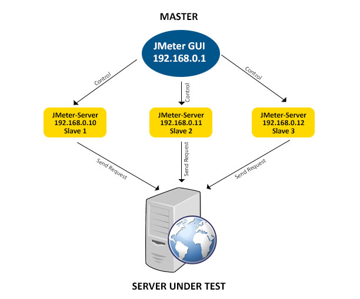

jMeter Workshop

jMeter Workshop
Agenda:
| Tag 1 | Tag 2 |
|---|---|
| (3) jMeter Plugin-Manager | (3) Verteiltes Testen mit jMeter |
| (3) Workload Design | (3) RMI |
| (2) Strukturierung von Testplänen | (2) Monitoring |
| (2) Scripting | (1) Containerisierung |
| (2) Reporting | (1) CI/CD-Pipeline |
| (1) Testdatenverwaltung | Klärung offener Punkte |
| (1) REST-APIs |
jMeter Plugin-Manager
jMeter Plugin-Manager
https://jmeter-plugins.org/wiki/PluginsManager/

Installation:
- lade https://jmeter-plugins.org/get/ herunter
- kopiere jar in das jMeter-Verzeichnis lib/ext
jMeter Plugin-Manager
Ausführung über die Kommandozeile:
https://jmeter-plugins.org/wiki/PluginsManagerAutomated/
PluginsManagerCMD <command> [<params>]
z.B.
PluginsManagerCMD install jpgc-fifo,jpgc-json=2.2
jMeter Plugin-Manager
Falls man hinter einem Proxy ist:
JVM_ARGS="-Dhttps.proxyHost=myproxy.com -Dhttps.proxyPort=8080 -Dhttp.proxyUser=john -Dhttp.proxyPass=***" PluginsManagerCMD status
jMeter Plugin-Manager
Eigenes Plugin schreiben:
https://jmeter.apache.org/usermanual/jmeter_tutorial.html
Eigenes Repository hinzufügen:
jMeter-Property setzen:
jpgc.repo.address=https://jmeter-plugins.org/repo/;http://my.intranet.site/plugins-repo.json
Das Repository-JSON muss folgendes Format erfüllen: https://jmeter-plugins.org/wiki/PluginRepositoryDescriptorFormat/
Gute Anleitung: https://www.blazemeter.com/blog/how-to-create-a-local-repository-of-jmeter-plugins
jMeter Plugin-Manager
Nützliche Plugins:
- Custom Thread Groups
- JMXMon Sample Collector
- jp@gc - PerfMon
- jp@gc - Dummy Sampler
- jp@gc - PlanCheck
jMeter Plugin-Manager
Ultimate Thread Group

jMeter Plugin-Manager
Concurrency Thread Group

jMeter Plugin-Manager
jp@gc - PerfMon

jMeter Plugin-Manager
jp@gc - Dummy Sampler

jMeter Plugin-Manager
jp@gc - PlanCheck
https://jmeter-plugins.org/wiki/TestPlanCheckTool/
Usage:
jmeter/lib/ext/TestPlanCheck.sh --jmx MyTestPlan.jmx --stats --tree-dump
jMeter Plugin-Manager
JMXMon Sample Collector

Workload Design
Workload
Definition:
The amount of work a system has to perform in a given time. In the performance field, a workload usually refers to combined load placed on an application by the set of clients it services
Performance Test-Arten

Performance Test-Arten
Load Testing: Modelliert die erwartete Benutzung
Stress Testing: Bestimmung des Limits an Concurrent Usern bis Fehler auftreten
Soak/Endurance Testing: Festgelegte Load die über einen definierten Zeitraum aufrecht erhalten wird
Spike Testing: testen von schnellem Anstieg/Abfall der Load -> z.B. Ticketverkauf
Volume Testing: Testen ob Applikation mit einem bestimmten Datenvolumen klar kommt
Scalability Testing: Testet die Fähigkeit einer Applikation hoch/runter zu skalieren
Prinzipien
Vorhersagbarkeit
Wiederholbarkeit
Skalierbarkeit
Vorhersagbarkeit
Das Verhalten des Systems (z.B. Prozessanfragen, Datenzugriffe, …) sollte während die Workload läuft vorhersehbar sein.

Wiederholbarkeit
Wenn eine Workload mehrere male auf identische Weise ausgeführt wird, sollte die Ergebnis nahezu identisch ausführen. Ansonsten wird eine Performance-Analyse sehr schwer.
Skalierbarkeit
Eine Workload solle mit unterschiedlichen Lasten ausgeführt werden können um die Skalierbarkeit der Anwendung testen zu können.
Workload Design Steps
- Design der Applikation
- Key-Szenarios identifizieren
- Definieren der Metriken
- Design der Load
- Definieren der Skalierungsregeln
- Design des Load-Generators
- Festlegung einer Baseline
Design der Applikation
Definieren der Aktoren und Use-Cases → Hilft die Operationen der Workload zu definieren
Definieren der Operationen
- Im einfachsten Fall mappt jeder User-Case auf eine Operation
- Für sinnvolle Workloads solle die Zahl der benötigen Operation klein gehalten werden (6-8) → Ansonsten schwer zu managen und verstehen
Key-Szenarios identifizieren
- Messbares Szenario: Ein User-Szenario das Performance-getestet werden soll, sollte vollständig messbar sein
- Meistbenutzte Szenarios
- Business-kritische Szenarios
- Ressourcen-intensive Szenarios
- Zeitabhängig häufig genutzte Szenarios: z.B. Weihnachts-Liste auf Amazon
- Stakeholder-relevante Szenarien
Key-Szenarios identifizieren
Beispiel für eine E-Commerce-Applikation:
- Browsen des Produktkatalogs
- Benutzeraccount anlegen
- Nach einem Produkt suchen
- Login
- Bestellung abschicken
Navigationspfade der Key-Szenarios untersuchen
- Auf welche Arten kann ich z.B. eine Bestellung abschicken
- Wie häufig wird welcher Weg genutzt? → Logfiles oder Analysetools (z.B Matomo)
Definieren der Metriken
Typische Metriken sind:
Durchsatz: Wie viele Operation können vom SUT während einer gewissen Zeit verarbeitet werden
Antwortzeiten: Zeit zwischen Ende der Anfrage und Beginn der Antwort an das SUT → Macht normalerweise nur Sinn wenn es auch Anforderungen für Antwortzeiten gibt
Ressourcenverbrauch: z.B. alle Ressourcen (IO, Memory, …) sollten nicht mehr als 70% der max. Auslastung haben
Anzahl maximaler Benutzer: Wie viele Benutzer können gleichzeitig ohne Probleme auf dem SUT arbeiten
Design der Load
der wichtigste Schritt im Workload Design!
die Relevanz der Workload hängt davon ab wie genau sie die die reale Produktionslast emuliert
gleichzeit wichtig: die Test-Workload solle sich auf die signifikanten Aspekte der Live-Load konzentrieren → Ansonsten wird es zu kompliziert
Design der Load
Arrival Rates: Die Rate mit der Requests an das SUT gestellt werden
Think Times: Zeit zwischen Anzeige der Daten beim Benutzer und seiner nächsten Interaktion → Bei großen Datenmenge steigt diese Zeit
Browser Mix: Welche Browser sollen im Test verwendet werden? Chrome, Firefox, …
Network Mix: Welche Netzwerkgeschwindigkeiten sollen im Test verwendet werden? z.B. 3G
Design der Load
- Operation Mix: Festlegung in welcher Frequenz welche Operation durchgeführt wird → oft prozentual je Operation was sich zu 100% summiert
Design der Load
Operation Mix:
- Flat Mix:
- Einfachste Möglichkeit
- wird verwendet wenn Operation unabhängig sind und die gleiche Wahrscheinlichkeit haben
- → Der Mix wählt eine Operation zufällig
Design der Load
Operation Mix:
- Flat Sequence Mix:
- Spezifiziert ein Set von Operations-Sequenzen
- z.B. Set1=Op1,Op2 und Set2=Op1,Op3
- jedem Set wird eine Wahrscheinlichkeit zugeordnet und dementsprechend ausgewählt
Design der Load
Operation Mix:
- Matrix Mix (Transition Mix):
- Beschreibt die Übergangswahrscheinlichkeiten in einem Markov-Modell
- wird häufig bei Web-Apps verwendet
Design der Load
Beispiel-Workload als Matrix-Mix:
| From | To Page 1 | To Page 2 | To Page 3 |
|---|---|---|---|
| Page 1 | 0,00 % | 80,00% | 20,00% |
| Page 2 | 20,00% | 39,00% | 41,00% |
| Page 3 | 60,00% | 19,00% | 21,00% |
Design der Load
Abhängig von der Operation müssen für den Request diverse Input-Daten generiert werden
Um ein realistisches Szenario zu erhalten sollten die Daten variiert werden → Bei 100 Items sollten nicht immer fix 5 selektiert werden
Design der Load
Best-Practice: Eine klein Zahl an Fehlern durch invalide Daten einfügen um auch Probleme im Error-Handling aufzudecken
Genieren “echter” Daten kann bei großen Daten problematisch werden → Workload Entwickler müsste all Möglichen Values kennen
- Uniform Random: Generierung von gleichverteilten Zufallsdaten, z.B. für Anzahl gewählter Items
- Non-Uniform Random: im Normalfall sind Datenzugriffe nicht gleichverteilt! → Datengenerierung sollte Wahrscheinlichkeit berücksichtigen
Definieren der Skalierungsregeln
Häufig skaliert man durch Erhöhung der emulierten Benutzer. Weitere Möglichkeiten sind:
Linear Scaling
- alles wird über einen einzigen Skalierungsfaktor skaliert
- z.B. Workload führt Datenzugriffe eines Benutzers aus → Anzahl Benutzer & Anzahl Datenzugriffe werden beide skaliert
- Häufig nützlich für “Sizing”-Zwecke
Non-linear Scaling
- Anwendungen skalieren oft nicht linear
- z.B. Tagging durch Benutzer → mit steigender Anzahl steigt die Last je User mit an, z.B. bei der Anzeige der Tags
Design des Load-Generators
Der Load-Generator implementiert die Workload
Dabei sollte beachtet werden:
Zum simulieren mehrerer Benutzer-Connections sollte kein connection-pooling verwendet werden
Jeder simulierte Nutzer sollte nach Möglichkeit seinen eigenen “Random number generator” (seeded mit unique value) verwenden um wirklich zufällige Daten zu bekommen
Festlegung einer Baseline
"A Baseline is the process of capturing performance metric data for the sole purpose of evaluating the efficacy of successive changes to the system or application. It is important that all characteristics and configurations, except those specifically being varied for comparison, remain the same in order to make effective comparisons as to which change (or series of changes) is driving results toward the targeted goal.
Festlegung einer Baseline
Armed with such baseline results, subsequent changes can be made to the system configuration or application and testing results can be compared to see whether such changes were relevant or not."
Praxisbeispiel
Nachdem die zeitliche Verteilung der Last mittels Load-Design ermittelt wurde, soll gezeigt werden wie so etwas in jMeter umgesetzt werden kann.
Beispiel:
- 40% anonyme Benutzer browsen auf der Webseite
- 30% authentifizierte Benutzer browsen auf der Webseite
- 20% führen eine Suche durch
- 10% bearbeiten ihren Shopping-Cart
Praxisbeispiel
Wir müssen also dafür sorgen das die einzelnen Use-Case mit den entsprechende Wahrscheinlichkeiten nachgebildet werden. Hierfür gibt es u.a. folgende Möglichkeiten:
- Unterschiedliche Thread-Groups mit unterschiedlicher Anzahl an Threads
- Throughput Controller
- Switch Controller
Praxisbeispiel
Variante 1: Unterschiedliche Thread-Groups mit unterschiedlicher Anzahl an Threads
- Thread Group mit 40 Benutzern
- Thread Group mit 30 Benutzern
- Thread Group mit 20 Benutzern
- Thread Group mit 10 Benutzern
Wichtig: Checkbox “Run Thread Groups consecutively” sollte dem gewünschten Test-Flow entsprechen
Praxisbeispiel
Variante 2: Throughput Controller mit unterschiedlichen “Execution Percentages”
- Throughput Controller (Percent Execution, 40.0) → some sampler
- Throughput Controller (Percent Execution, 30.0) → some sampler
- Throughput Controller (Percent Execution, 20.0) → some sampler
- Throughput Controller (Percent Execution, 10.0) → some sampler
Praxisbeispiel
Komplexeres Beispiel für Variante 2:

Praxisbeispiel
Variante 3: Switch Controller - Random Weighted Values

Erkennen der Last-Grenzen / Server-Bedarfs
Last-Grenzen können sehr gut mittels Stress-Testing ermittelt werden.
Beispiel: Thread Group → HTTP Request → Response Assertion (Code 200) → View Results in Table
Erkennen der Last-Grenzen / Server-Bedarfs

Erkennen der Last-Grenzen / Server-Bedarfs
Es ist sinnvoll zu prüfen warum der Stress-Test ab einem gewissen Punkt fehlschlägt (z.B. Daten aus JMXMon, Logs der App, …):
- zu wenig Arbeitsspeicher?
- IO zu langsam
- Netzwerk zu langsam
- Prozessor zu langsam
- DB zu langsam
- Load-Balancer überlastet?
- Messaging-Queue als Bottleneck?
Erkennen der Last-Grenzen / Server-Bedarfs
Evtl. reicht es aus dem System etwas mehr Speicher zu geben oder eine kleine Code-Anpassung anstatt es verteilen zu müssen
Elemente/Strukturierung von Testplänen
Elemente/Strukturierung von Testplänen
- Thread Groups
- Sampler
- Controller
- Timers
- Assertions
- Listener
- Pre-/Post-Prozessoren
- Configuration Elements
- Cookie-Manager / Header-Manager
- Variablen / Properties
- Testfragmente & Templates
- Ausführungsreihenfolge
Thread Groups
A Thread Group in JMeter represents a pool of virtual users performing a set of operations

Thread Groups

Wichtigste Einstellungen:
- Anzahl Threads
- Anzahl der Wiederholungen
- Ramp-Up-Zeit einstellen (wichtig z.B. für Spike-Testing bei Ticketverkauf!)
Thread Groups
Beispiel: Google-Suche
Ein Teil der Nutzer verwendet die Text-Suche, andere die News- oder Bilder-Suche
Hierfür kann man verschieden Thread-Gruppen mit unterschiedlichem Thread-Count anlegen
In diesen Thread-Gruppen werden diverse Sampler (z.B. Http-Requests) hinzugefügt um die Benutzer-Requests zu simulieren
Thread Groups
| Thread Group | Use-Cases |
|---|---|
| Classic | Einfache Szenarios, Stress/Soak Testing |
| Arrivals | Soak Testing: App-Verhalten wenn alle n-Minuten x-User hinzukommen |
| Free Form Arrivals | Vergleichbar mit Arrival Thread Group |
| Concurrency | Wie classic Threadgroup. Aber einfacher und weniger Speicherbedarf |
Thread Groups
| Name | Use-Cases |
|---|---|
| Stepping | Ältere Version der Threadgroup mit mehr Konfigurationsaufwand |
| Ultimate | Komplexe Spike Testing Szenarios |
| setUp Thread Group | Vorbereiten der Testumgebung (z.B. VM/Container starten, DB befüllen) |
| tearDown Thread Group | Aufräumen der Testumgebung |
Sampler

Durch Threadgruppen werden Benutzer-Anfragen an den Server simuliert. Sampler legen die Art des Requests fest!
Sampler
- FTP Request
- HTTP Request (can be used for SOAP or REST Webservice also)
- JDBC Request
- Java object request
- JMS request
- JUnit Test request
- LDAP Request
- Mail request
- OS Process request
- TCP request
Sampler
Falls man mehrere Requests des gleichen Typs versendet → Überlegen of Defaults Configuration Element nützlich sein könnte
OS Process request: Häufig nützlich in setUp/tearDown-Szenarien
Sollte man auch bei den Plugins keinen passen Sampler finden → Es lassen sich auch eigene Sampler schreiben. Häufig findet sich auch auf Github etwas!
Controller
Logische Controller legen fest wann/welche Sampler verwendet werden

Controller
Ziel des Module Controllers ist es Modularität zu jMeter hinzuzufügen, z.B. bei Webapps (Login, Suche, …)

Controller
Beispiel: 100 Benutzer loggen sich ein, 30 Benutzer suchen auf google und 50 Benutzer loggen sich aus

Controller
Der Module-Controller kontrolliert welches Modul laufen soll

Controller
Weitere wichtige Controller:
- Interleave Controller: wählt Request und führt diesen einmal in jedem Loop des Threads durch
- Runtime Controller: kontrolliert wie lange seine Kinder laufen
- Transaction Controller: Stoppt Gesamtzeit des Testdurchführung, z.B. Dauer des Logins
- Include Controller: Nutzung externer Testpläne
Timers
Durch Timer läßt sich in jMeter ein Delay zwischen den Sampler definieren
Ohne delay könnten zu viele Requests in kurzer Zeit den Server überlasten
Fügt man mehr als einen Timer zur Thread-Gruppe summiert jMeter die Timer-Zeit und pausiert so lange
Um Pause an einer bestimmten Stelle im Test Plan zu machen → Flow Control Action Sampler
Assertions
Über Assertions lässt sich prüfen ob sich die Applikation unter Last wie erwartet verhält
Beispiel: Response enthält bestimmten Text?
Um Assertion-Ergebnisse anzuzeigen muss man einen entsprechenden Listener zur Thread-Gruppe hinzufügen
Assertions
Scope beachten!

Assertions
Performance beachten!
gering: Kann ohne Probleme genutzt werden
moderat: Sparsam einsetzen, insbesondere bei größeren Serverantworten (100kbs bis mehrere MB)
hoch: größtenteils nur für funktionales Testen oder leichte Last (<10 concurrent Usern) passend
Assertions
| Assertion | CPU/Memory |
|---|---|
| Response Assertion | moderat |
| Duration Assertion | gering |
| Size Assertion | gering |
| XML Assertion | hoch |
| Beanshell Assertion | Variable |
| MD5Hex Assertion | gering |
Assertions
| Assertion | CPU/Memory |
|---|---|
| HTML Assertion | hoch |
| XPath Assertion | hoch |
| XML Schema Assertion | hoch |
| JSR223 Assertion | Variable |
| Compare Assertion | hoch |
| SMIME Assertion | moderat |
| Json Assertion | hoch |
Assertions
Beispiel: Eigene JSR223 Assertion um Durations zu prüfen
def response_time = prev.getTime().toInteger();
def expected_response_time = 0;
if (response_time > expected_response_time) {
AssertionResult.setFailure(true);
AssertionResult.setFailureMessage("The expected response time is : " + expected_response_time + "ms but it took: " + response_time + "ms");
}Listener

Zeigen die Ergebnisse der Testdurchführung
Listener

Listener
Sammeln Ergebnisse auf gleichem Level oder darunter
Listener können sehr Ressourcenintensiv sein!
- Nicht bei Load-/Stress-Tests verwendet werden sollten:
- Assertion Results
- View Results in Table
- View Results Tree
Ergebnisse können auch in Files (csv, xml) zur Weiterverarbeitung weggeschrieben werden
- Default konfigurierbar in jmeter.properties bzw. user.properties
- mehr Details siehe: https://jmeter.apache.org/usermanual/listeners.html
Listener
CLI-Modus: mit dem -l Flag can ein Top-Level listener benutzt werden zusätzlich zu den im Testplan definierten Listenern
jmeter -n -t testplan.jmx -l testplan_01.jtl -j testplan_01.log
Generieren eines HTML-Reports aus .jtl-Dateien:
./bin/jmeter -g JTL_FILE -o OUTPUT_FOLDER
Listener

Listener
Real-Time-Results: seit jMeter 2.13 unterstützt jMeter Real-Time-Results, z.B. für Grafana.
Details: https://jmeter.apache.org/usermanual/realtime-results.html

Pre- und Post-Prozessoren
Ist ein Pre-/Post-Prozessor direkt an einen Sampler angehängt wird er direkt vor/nach diesem Sampler ausgeführt
Häufigste Use-Cases:
- Pre-Prozessor:
- Settings eines Requests direkt bevor er läuft verändern
- Variablen Updaten die nicht aus dem Response-Text extrahiert werden.
- Post-Prozessor:
- Verarbeiten der Response Daten, z.B extrahieren von Daten (Regex, Json, …)
Configuration Elements

Configuration Elements
Können keine Requests senden, diese aber verändern.
Beispiel: Setzen von Defaults und Variablen für Nutzung in Samplern
Zugriff nur innerhalb des Zweiges in dem das Element hinzugefügt wurde
Settings werden normalerweise gemerged, wobei Elemente tiefer im Baum Vorrang haben.
- Ausnahme: User Defined Variables werden unabhängig von der Position zu Beginn des Test verarbeitet
- Empfehlung: User Defined Variables sollten am Start der Thread-Gruppe positioniert werden
Configuration Elements
Header Manager, Cookie Manager und Authorization Manager stellen einen weiteren Sonderfall dar:
Setting werden nicht gemerged
Gibt es mehr als einen Manager im Scope wird nur einer verwendet. Es lässt sich allerdings nicht festlegen welcher!
Configuration Elements
Cache-Manager: Falls man Last-Tests mit Cache durchführen möchte, z.B. für Web-Apps
Cookie-Manager: Falls man Anwendung mit Cookies testen möchten, z.B. Auth bei Web-Apps
Header-Manager: Kann HTTP Request-Header überschreiben, z.B. Authorization-Header für JWTs bei Web-Apps
Properties / Variablen
Properties:
sind global in jMeter
wird meistens für jMeter Default-Werte genutzt → Beispiel: remote_hosts
setProperty kann genutzt werden um eine jMeter-Property zu definieren → Da diese Global sind können hierdurch bei Bedarf Informationen zwischen den Threads ausgetauscht werden!
Properties / Variablen
Variablen:
lokal für jeden Thread
Wird eine Variable in einem Thread upgedated wird nur die Thread-Kopie der Variable verändert!
Durch den Testplan definierte Variablen und “User Defined Variables” werden zum Start innerhalb des Testplans verfügbar gemacht
Bei mehrfach-Definition gewinnt die letzte Definition!
Nützlich um Tests zu parametrisieren → Identifikation von Werten die innerhalb eines Test-Runs konstant bleiben!
Configuration Elements
Beispiel für Parametrisierung:
| Variable | Wert |
|---|---|
| HOST | www.example.com |
| THREADS | 10 |
| LOOPS | 20 |
wird zu…
Configuration Elements
| Variable | Wert |
|---|---|
| HOST | ${__P(host,www.example.com)} |
| THREADS | ${__P(threads,10)} |
| LOOPS | ${__P(loops,20)} |
Aufruf: jmeter … -Jhost=www3.example.org -Jloops=13 (Alternativ: entsprechende user.properties setzen)
Zugriff innerhalb des Testplans auf die Werte: ${HOST}, ${THREADS}, ${LOOPS}
Testfragment
Testfragmente sind eine spezielle Art von Controller auf Ebene des Thread Group Elements. Man unterscheidet zwischen Test Fragment Nodes und Test Fragment Files. Test Fragment Nodes lassen sich nicht in Test Fragment_Files inkludieren!
Testfragment
wird nicht ausgeführt solange es nicht in einem Modul-Controller oder Include-Controller referenziert wird. → Ermöglicht gleichzeitiges Arbeiten an Modulen in separaten Files
Dient der Code-Wiederverwendung innerhalb von Testplänen und hilft sehr große Testpläne wartbar zu machen
Details: https://www.blazemeter.com/blog/how-manage-large-jmeter-scripts-jmeter-test-fragments
Testfragment
| Funktionalitäten einer Beispielapp |
|---|
| Login |
| Logout |
| User Registration |
| Search for Product |
| Select Product |
| Order Product with different payment methods |
| Edit Order |
| Cancel Order |
| Search for User Profile |
Testfragment
Hilft unterschiedliche Workflows zu unterstützen
- Workflow 1: User Registration -> Search for Product -> Select Product -> Order Product -> Logout
- Workflow 2: Login -> Search for Product -> Select Product -> Order Product -> Logout
- Workflow 3: Login -> Search for User -> Cancel Order -> Logout
- Workflow 4: Login -> Search for Product
Testfragment

Templates
Wiederverwendbare Test-Vorlagen zum Projekt-Start
z.B. Github-Template für Wordpress: https://github.com/jmeter-templates/wordpress
Erzeugung eines Templates:
.jmx-File in /templates abspeichern
Template.xml öffnen und Daten für eigenes Template ergänzen
Nach jMeter-Neustart kann Template ausgewählt werden
Ausführungsreihenfolge
- Configuration Elements
- Pre-Processors
- Timers
- Sampler
- Post-Processors
- Assertions
- Listeners
Ausführungsreihenfolge
- Timers, Assertions, Pre-/Post-Processors werden nur ausgeführt, wenn es einen Sampler gibt auf den sie sich beziehen können!
- Logic-Controller und Sampler werden in der Reihenfolge in der sie im Baum stehen ausgeführt
- Andere Testelemente werden entsprechend ihres Scopes ausgeführt
Ausführungsreihenfolge
Beispiel-Testplan:
- Controller
- Post-Processor 1
- Sampler 1
- Sampler 2
- Timer 1
- Assertion 1
- Pre-Processor 1
- Timer 2
- Post-Processor 2
Ausführungsreihenfolge
Ausführungsreihenfolge:
Pre-Processor 1 → Timer 1 → Timer 2 → Sampler 1 → Post-Processor 1 → Post-Processor 2 → Assertion 1
Pre-Processor 1 → Timer 1 → Timer 2 → Sampler 2 → Post-Processor 1 → Post-Processor 2 → Assertion 1
Scripting
BeanShell
Eine der fortgeschrittensten Komponenten in JMeter
Hilfreich für sehr ungewöhnliche Testfälle die ansonsten schwer in jMeter umzusetzen wären
Hat Zugriff auf interne JMeter-APIs und jede externe Klasse die in den jMeter Classpath geladen wird
- jars nach /lib/ext kopieren
- jars müssen am Anfang des BeanShell-Script importiert werden
BeanShell
Beispiel Use-Cases:
jMeter-Variablen verändern: var.put(“counter”, “false”);
jMeter-Variable in Property umwandeln: props.put(“some_variable”, var.get(“some_variable”));
Cookies zwischen Thread-Groups übergeben: siehe https://www.blazemeter.com/blog/how-use-beanshell-jmeters-favorite-built-component
Testfall im Fehlerfall stoppen
komplexe Assertions
BeanShell
Vordefinierte Variablen:
- SampleResult: Felder/Methoden von Sample-Result verfügbar
- ResponseCode: Setzt Sampler Response z.B.: ResponseCode = “200”;
- ResponseMessage
- IsSuccess: Falls true wird der Sampler als passed betrachtet
- Label: String der in the Test Ergebnisse aufgelistet wird
- FileName
- ctx: gibt Zugriff JMeterContext, Sampler, Ergebnisse
- vars: gibt Zugriff auf jMeter Variablen
- props: gibt Zugriff auf jMeter Properties
- log: schreiben in jmeter.log, z.B. log.info(“Test”);
BeanShell
Ist die BeanShell Tot? → https://www.blazemeter.com/blog/is-beanshell-dead
langsamer und mehr Speicherverbrauch als JSR223+Groovy
Seit JMeter 3.1 ist Groovy die Default Scripting-Sprache für JSR223 Sampler
JMeter Contributor Philippe Mouawad: “avoid Beanshell in favor of JSR223 + Groovy because Beanshell is old, slow…”
BeanShell

JSR223
zwar etwas langsamer als der Java Request Sampler, allerdings entfällt: recompile → zum Classpath hinzufügen → jMeter Neustart
Einige nützliche JSR223-Beispiele gibt es unter: https://octoperf.com/blog/2017/11/09/reusable-sample-jmeter-scripts/#log-a-message
Nützliche jMeter-Funktionen sind hier zu finden: https://www.flood.io/blog/jmeter-tutorial-how-to-use-jmeter-functions
RegEx-Extractor

Arbeiten mit JARs
Use-Cases für Jars:
Wir haben 20 Tests mit dem selben Code-Stück. Bei Änderungen müssten sonst alle 20 Tests angepasst werden.
- → besser den Code als jar bereitstellen (jmeter/lib bzw. jmeter/lib/ext) und dann im JSR223-Sampler verwenden
Benutzung externe Bibliotheken (z.B. Apache POI)
Arbeiten mit JARs
Jars liegen normalerweise im Ordner jmeter/lib oder jmeter/lib/ext
In user.properties können folgende Pfade gesetzt werden:
- search_paths
- user.classpath
- plugin_dependency_paths
Reporting
Arten von Reporting
Reports innerhalb der jMeter-GUI, z.B. View Results Tree
JTL-Files: sind am mächtigsten um JMeter-Ergebnisse zu analysieren
HTML-Report
real-time Reports mittels Backend Listener, z.B. Grafana, ELK, Taurus, DB, JMS-Bus…
Arten von Reporting
| Pros JTL | Cons JTL |
|---|---|
| plain csv leicht zu lesen | Jeder Load-Generator schreibt seine eigenen JTLs → Bei Distributed Testing müssen diese zum Controller zurückgespielt werden |
| einiges Web-Tools können JTL-Reports erzeugen | Können sehr groß werden (mehrere GB) |
| Alle Ergebnisse werden bei JTL-Files gespeichert | JTL muss Data-Mined werden um sinnvolle Metriken zu erhalten |
Arten von Reporting
Generierung von Bildern aus JTL-Files mittels: JMeterPluginsCMD Command Line Tool
Es existieren diverse Tools zur Anzeige von JTL-Reports:
JTL-Reporter: https://github.com/ludeknovy/jtl-reporter
JMeter-Logstash: https://github.com/anasoid/jmeter-logstash
Arten von Reporting
Erzeugen eines HTML-Reports:
jmeter -g <outputfile.jtl/csv> -o <path to output folder for html report>
bzw.
jmeter -n -t <test JMX file> -l <outputfile.jtl/csv> -e -o <Path to output folder>
In der jMeter-UI auch möglich: Tools → Generate HTMl report
Ergebnis-Analyse
Bevorzuge Perzentile gegenüber Durchschnitten:
- Durchschnitte verstecken Ausreißer
- Geben keine Information über die Verteilung der Daten
Beispiel mit jeweils gleichem Durchschnitt:


Ergebnis-Analyse
Sei vorsichtig mit den Antwortzeiten zu Beginn eines Tests:
- Caches werden noch gefüllt
- JIT warm up
- Autoscaling-Mechanismus wird evtl. noch initialisiert
→ Applikation sollte warm up vor dem Test machen, außer man möchte das Verhalten nach einem restart testen

Ergebnis-Analyse
Schaue die Verteilung der Response-Zeiten an. Ein performante Applikation wird ungefähr wie eine Halb-Normal-Verteilung aussehen.


Ergebnis-Analyse
Sehr gute Zusammenfassung: https://octoperf.com/blog/2017/10/19/how-to-analyze-jmeter-results/#interpreting-jmeter-metrics
Testdatenverwaltung
Testdaten in .json-Datei / .csv-Datei
Testdaten werden aus .csv gelesen → Tipp: mit dem Random CSV Data Set plugin können die Daten in zufälliger Reihenfolge gelesen werden
Testdata-Partitioning: https://guides.flood.io/scripting-and-tools/test-data
Alternativ können auch ander Formate implementiert werden, z.B. Excel: https://www.blazemeter.com/blog/how-to-implement-data-driven-testing-in-your-jmeter-test
jMeter-Funktionen zur Datengenerierung
JSR223: z.B. Aufruf einer Library wie https://ngneat.github.io/falso/
BSF-PreProcessor: https://blog.mayflower.de/566-Pseudodynamic-data-generation-in-JMeter.html
Random Testdata: https://www.logic2020.com/insight/tactical/generate-random-test-data-run-time-jmeter
REST-APIs
Nutzung des Test-Rekorders
- Test Plan → Add → Non-Test Elements → HTTP(S) Test Script Recorder
- Einstellungen → Port festlegen
- Thread Group → Add → Logic Controllers → Recording Controller
- Im Browser Proxy auf gleichen Port wie Skript-Rekorder stellen
- Zertifikat (jMeter/bin/ApacheJMeterTemporaryRootCA.crt) im Browser importieren
- Firefox: options → search for ‘certificate’ → view certificates
- Haken bei “Trust Website” setzen
- Test aufzeichnen
Umgang mit Sessions/Authentification
- JWT-Token erhalten
- Bei Cookies: in jmeter.properties folgendes setzen: CookieManager.save.cookies=true → macht Cookies als Variablen verfügbar
- Bei Localstorage: jMeter-Integration mit Selenium nutzen
- JWT mittels Regex aus Login-Response extrahieren
- setzen des Authorization-Headers mittels HTTP Header Manager: z.B. auf ${COOKIE_Authorization}
Umgang mit Sessions/Authentification

Umgang mit dynamischen Daten
Beispiel: Benutzer wird angelegt → Benutzerprofil aufrufen
Die URL des Benutzerprofils könnte die Benutzer-ID in der URL enthalten, welch erst nach dem anlegen des Benutzer bekannt ist
Lösung:
- Benutzer anlegen
- Benutzer-ID aus Response in eine Variable extrahieren (z.B. mittels Regular Expression Extractor)
- Verwenden der Variable (z.B. ${benutzerId}) im HTTP-Request zum Aufruf des Benutzerprofils
Verteiltes Testen mit jMeter
Master-Slave-Setup

Master-Slave-Setup
Voraussetzungen:
Bei 192.x.x.x und 10.x.x.x Adressen: Alle Server sollten sich im gleichen Subnetz befinden
Firewall blockiert nichts
Master und Slaves sollten folgendes gemeinsam haben:
- gleiche Java-Version
- gleiche jMeter-Version
Master/Slaves können als Computer/VMs/Container bereitgestellt werden
Master-Slave-Setup
Slave-Konfiguration:
- editiere jmeter/bin/jmeter-server auf jedem Slave
- setze IP der Maschine in RMI_HOST_DEF
- setzte RMI-Port direkt darunter: ${DIRNAME}/jmeter {SERVER_PORT:-2010} -s -j jmeter-server.log “$@”

- starte jMeter-Server auf jedem Slave: jmeter/bin/jmeter-server.bat
Master-Slave-Setup
Master-Konfiguration:
editiere jmeter/bin/jmeter.properties auf dem Master
- füge alle IPs der Slave-Systeme Komma-separiert unter remote_hosts hinzu
- setze server_port
Master-Slave-Setup
Starten der Tests auf dem Master:
via GUI:
jmeter
non-GUI:
jmeter -n -t script.jmx -rjmeter -n -t script.jmx -R server1,server2,...
Überprüfung ob all Slave-Systeme korrekt arbeiten: jmeter.log ansehen
Master-Slave-Setup
Limitierungen:
RMI kann über Subnetze hinaus nicht ohne Proxy kommunizieren. Daher gilt das gleiche auch für jMeter.
jMeter sendet alle Test-Ergebnisse zur kontrollierenden Konsole
- Netzwerk kann schnell überlastet werden
- → Am besten den “Simple data writer” verwenden und die Files erst später ansehen
Ein jMeter-Client auf einer 2-3Ghz CPU kann ca. 300-600 Threads verarbeiten
XML ist im Vergleich zu Binär-Protokollen um den Faktor 4-10 langsamer!
Master-Slave-Setup
- Jedes Slave-System führt die im Master definierten Dinge aus
- wollen wir für 10000 Nutzer testen und haben 10 Slaves → Im Testplan muss für 1000Nutzer geplant werden, damit wir am Ende auf insgesamt 10000 kommen!
- Über den if-Controller lassen sich auf den einzelnen Slaves unterschiedliche Dinge ausführen
Testausführung über CLI
Demo: Testdata-Partitioning
Large-Scale
Zu beachten bei verteilten Large-Scale-Lösungen: https://octoperf.com/blog/2017/10/12/optimize-jmeter-for-large-scale-tests/
von Kommandozeile starten → UI verbraucht viel Memory
Vermeide UI listener (z.B. Graphen, Tabellen) → in ein JTL-File schreiben (z.B. mittels Simple data writer)
Genug Heap-Space bereitstellen, z.B. JVM_ARGS=“-Xms1g -Xmx8g” jmeter.sh
Vermeide mehr als 1000 Benutzer/Maschine zu simulieren
Large-Scale
lieber mehr Durchschnittshardware (z.B. 4core, 16GB) als einige wenige Superrechner (z.B. 16core, 128GB)
Vermeide Beanshell-Skripte
Verwende .csv-JTLs anstelle von XML
Distributed Mode funktioniert gut mit 20-30 (mit Glück 40-50) Maschinen, da die RMI-Kommunikation von jMeter nicht sehr effizient ist
- Darüber hinaus lieber jede JMeter-Instanz einzeln starten
- das JMX vor dem Test-Start hin senden
- nach dem Test das JTL-File holen
RMI
RMI
Diskussion: aktueller verwendeter RMI-Sampler
Vergleich mit existierende RMI-Samplern auf Github
Monitoring
Prometheus / Grafana
YourKit-Profiler
Containerisierung
IaC: Infrastructure as a Code
Mit IaC (Infrastructure as Code) wird die Infrastruktur durch Code – und nicht durch manuelle Prozesse – verwaltet und provisioniert.
Mit IaC werden Konfigurationsdateien erstellt, die Ihre gesamten Infrastrukturspezifikationen enthalten, wodurch Sie Konfigurationen einfacher bearbeiten und verteilen können. Es stellt außerdem sicher, dass Sie jedes Mal dieselbe Umgebung provisionieren.
Ein wichtiger Bestandteil von IaC ist die Versionskontrolle. Wie jede andere Software-Quellcodedatei sollten auch Ihre Konfigurationsdateien der Quellkontrolle unterliegen.
Vagrant + Ansible
Ansible Playbook: https://galaxy.ansible.com/lean_delivery/jmeter
Docker / Docker-Compose
Kubernetes
CI/CD-Pipeline
Github Actions
https://github.com/marketplace/actions/setup-jmeter https://github.com/marketplace/actions/apache-jmeter https://github.com/marketplace/actions/perfaction-for-jmeter https://www.redline13.com/blog/2021/10/github-actions-for-jmeter/ https://dev.to/sebiboga/generate-jmeter-test-report-and-save-it-as-artifact-with-github-actions-4a6b https://stackoverflow.com/questions/68084554/fail-github-actions-pipeline-if-dockerized-jmeter-tests-failed
jMeter in einer Github-Actions Pipeline
JMeter in einer Jenkins-Pipeline
Klärung offener Punkt